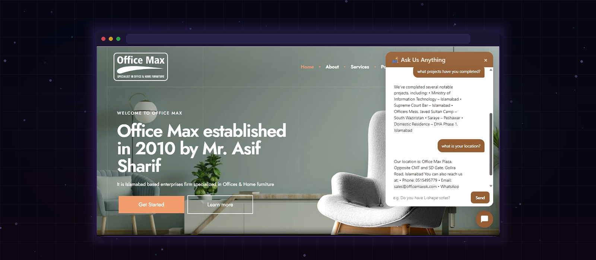
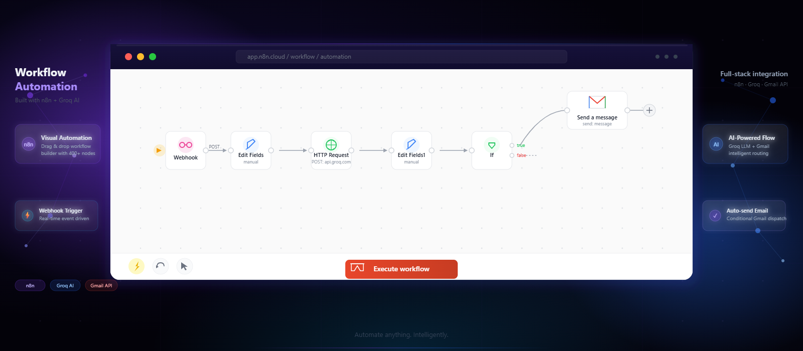
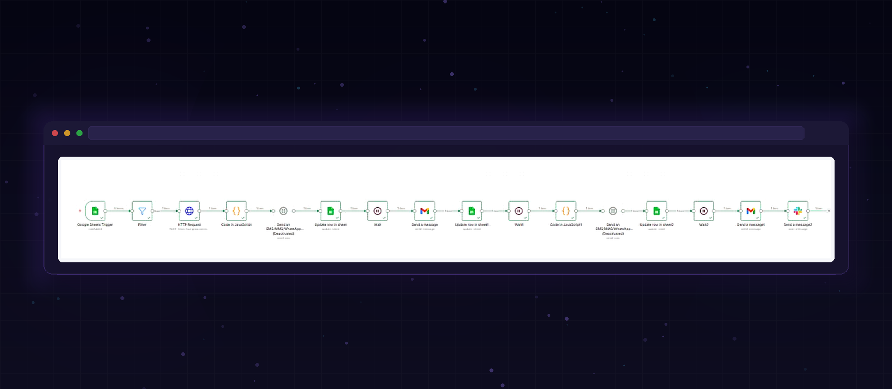
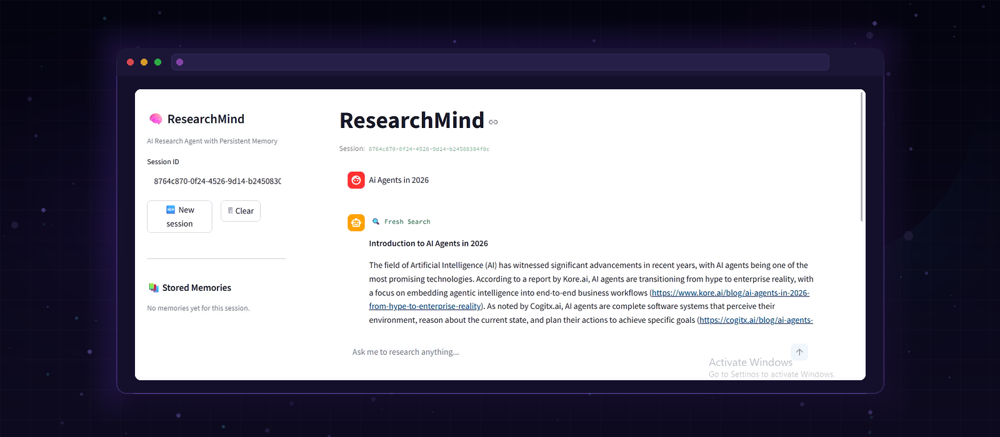

My work
Projects
Real AI systems built with production requirements in mind — not tutorials, not demos.

ContentForge AI
An autonomous multi-agent system that researches, writes, and delivers SEO-optimized content — end-to-end, no manual input.
The problem
Traditional AI content tools rely on single prompts, leading to generic results. ContentForge AI orchestrates multiple specialized AI agents in a structured pipeline — each handling a specific stage for higher accuracy and production-ready outputs.
How it works
- Researcher Agent → Real-time web research, trend identification, SEO keyword extraction
- Writer Agent → 600–800 word blog post + LinkedIn, X, Instagram content
- Reviewer Agent → Quality validation, formatting, structured Pydantic JSON output
Key features
Multi-agent orchestration (CrewAI)Real-time web researchSEO-optimized contentPlatform-native social postsFastAPI + Streamlit UISQLite content historyPydantic structured outputFree-tier optimized

OfficeMax Furniture AI Chatbot
A hybrid RAG chatbot deployed on a live furniture business — handling customer inquiries 24/7 so the sales team can focus on closing deals.
The problem
Furniture customers ask repetitive questions about products, services, and past projects — tying up sales staff on basic inquiries instead of closing deals. The client needed a solution that could handle these questions 24/7 without human involvement.
How it works
- Hybrid retrieval → FAISS semantic search + BM25 keyword search find the most relevant information from the knowledge base
- Cross-encoder reranking → Results are reranked for precision before being passed to the LLM
- LLaMA 3.3 70B via Groq → Generates natural, accurate responses from the retrieved context
- Smart escalation → Pricing and availability queries are routed to the sales team automatically
Key features
Hybrid retrieval (FAISS + BM25 + reranking)Researched & authored entire knowledge base from scratchConversation memory across sessionsSmart escalation to sales teamEmbedded in WordPress via custom chat widgetDeployed on Google Cloud Run + DockerLive on officemaxfurnitures.com

AI Database Assistant
Allows non-technical users to query databases using plain English — converts to SQL, executes it safely, and explains results in plain language.
The problem
Business teams depend on developers to access data. Users just ask: "Show top customers by revenue last month" — and get structured results with plain-English explanations, no SQL knowledge needed.
How it works
- Step 1 → Schema-aware NL → SQL conversion using LangChain + OpenAI
- Step 2 → Safe query execution with guardrails via SQLAlchemy
- Step 3 → Structured results with data visualizations
- Step 4 → Plain-English explanation of what the data means
Key features
Schema-aware NL → SQLSafe query executionPlain-English explanationsMulti-database supportStreamlit UI

AI Lead Qualification System
Captures leads via form, scores them 1–10 using AI based on intent and seniority, and routes high-quality prospects with real-time Slack notifications.
The problem
Sales teams waste hours manually reviewing leads and deciding who to follow up with. Most leads go cold before anyone acts on them. This system automates the entire qualification pipeline — from capture to scored, routed, and notified — with zero manual effort.
How it works
- Step 1 — Capture → Leads submit via Tally form; data is validated and cleaned automatically
- Step 2 — Score → AI scores each lead 1–10 based on intent, company relevance, and seniority
- Step 3 — Filter → Only high-quality leads pass through to the next stage
- Step 4 — Notify → Sales team receives real-time Slack notifications for hot prospects
Key features
AI lead scoring (1–10)Intent & seniority analysisTally Forms integrationReal-time Slack notificationsAutomated lead routingReduces manual sales effortImproves conversion rates

Insurance Agency AI Automation
A fully automated lead follow-up system for insurance agencies — zero manual follow-up, agents only make the call that converts.
The problem
Insurance agents spend hours manually following up with leads via calls, texts, and emails — most of which go unanswered. Leads go cold while agents are stuck doing admin instead of selling. This system handles the entire follow-up sequence automatically, so agents only engage when a lead is warm.
How it works
- Day 0 → New lead added to Google Sheets → Groq AI (LLaMA 3.3 70B) writes a personalized SMS → Twilio sends it instantly → Sheet updated to "Contacted"
- Day 2 → Personalized follow-up email sent automatically via Gmail
- Day 5 → Urgency SMS fires, tailored to lead type (Medicare, ACA, or Auto)
- Day 10 → Soft close email sends automatically
- Every step → Slack notifies the agent in real time
Key features
AI-personalized SMS via Twilio10-day automated follow-up sequenceLLaMA 3.3 70B copywritingGoogle Sheets as CRMGmail automated emailsReal-time Slack agent alertsInsurance-type aware messaging (Medicare / ACA / Auto)Zero manual follow-up

ResearchMind
An AI agent that researches any topic, stores findings with vector embeddings, and recalls past research across sessions — all on free tiers.
The problem
AI assistants have no memory — every session starts from scratch. You re-research the same topics repeatedly, wasting time. ResearchMind solves this by storing research findings as vector embeddings and recalling them intelligently on future queries.
How it works
- Query embedding → Your query is embedded with Gemini text-embedding-004 (768 dimensions)
- Memory check → Supabase pgvector runs cosine similarity search across past research
- Cache hit (🧠) → If similarity > 0.75, cached summary returned instantly — no API call needed
- Cache miss (🔍) → Tavily searches the web, Groq LLaMA 3.3 70B summarizes, result stored to Supabase for next time
Key features
LangGraph agent frameworkPersistent vector memory (Supabase pgvector)Gemini embeddings (768-dim)Tavily real-time web searchCosine similarity recallFastAPI + Streamlit UI100% free tier stack

Agentic RAG Knowledge System
An intelligent knowledge assistant that retrieves, verifies, and cites information from documents — designed for accuracy and real-world use.
The problem
Most AI systems hallucinate because they rely only on memory. This system uses an agentic retrieval pipeline — it actively searches documents, evaluates relevance, and only answers when it has strong supporting evidence. Every response includes source citations.
Designed for
- Internal knowledge bases → Instant answers from your company documents
- Document-heavy workflows → Legal, research, compliance teams
- Research & analysis → Cited, verifiable outputs every time
Key features
Agent-driven retrievalSource citations on every responseFAISS + BM25 hybrid searchCross-encoder rerankingStreaming responsesMulti-LLM support